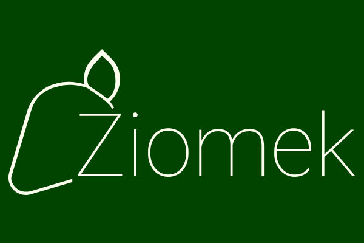

beVitch
Kiwiecień 2020 - aktualniebeVitch to biblioteka komponentów UI dla Vue. Jest to projekt open source, z wykorzystaniem storybook, pisany w TypeScript.
Zobacz storybook Zobacz Github
Jestem front-end developerem z dużym doświadczeniem z frameworkiem Vue. Pracowałam zarówno przy tworzeniu nowych portali, jak i przy przebudowach i utrzymaniu. Wyróżniam się komunikatywnością i wysokimi umiejętnościami analitycznymi. Pierwsze kroki w zawodzie stawiałam pod opieką mentora, co zaowocowało dobrymi nawykami i przywiązywaniem wagi do code review jako sposobu wymiany wiedzy, utrzymania jakości kodu i budowania dobrych relacji w zespole. Obecnie szukam pracy, która umożliwi mi zdobycie doświadczenia komercyjnego w innych frameworkach frontendowych jak Angular i React.
Zaprszam na mój
Github i
Codepen.

beVitch to biblioteka komponentów UI dla Vue. Jest to projekt open source, z wykorzystaniem storybook, pisany w TypeScript.
Zobacz storybook Zobacz GithubDlaucznia.pl jest komercyjnym projektem Nowej Ery, przy którym pracowałam od etapu prac koncepcyjnych. Jest to aplikacja PWA, stworzona z użyciem Vue, Vuex, Nuxt. Projekt prowadzony w metodyce SCRUM.
Zobacz stronęStrona, na której właśnie się znajdujesz, stanowi moją piaskownicę. Obecnie strona jest tworzona bez użycia frameworków - używam vanilla js oraz Sass. Projekt dawniej był budowany z użyciem Gulpa, obecnie używam Webpacka. Stosuję lintery, testy piszę w Jest i staram się pisać kod z poszanowaniem dobrych praktyk (Architektura 7 in 1, BEM) oraz semantyki html.
Zobacz Github Na fali popularności cryptokitties zbudowałam stronę pozwalającą przeglądać statystyki popularnosci cech u tych niezywkłych stworzeń na próbce losowej pobranej danego dnia. Moim celem było wstępne zapoznanie się z elementem canvas.
Zobacz Github Zobacz stronęProste narzędzie do wykrywania autokorelacji sygnału. W aplikacji wykorzystałam takie rozwiązania jak service worker i synchroniczne wczytywanie plików. Użyłam biblioteki do tworzenia wykresów - jqplot, natomiast potrzebne algorytmy statystyczne zaimplementowałam samodzielnie.
Zobacz Github Zobacz stronęJeden z projektów do których planuję powrócić, po odpowiednim zgłębieniu zagadnień architektury aplikacji. W trakcie tworzenia był dla mnie ćwiczeniem w odejściu od jquery na rzecz vanilla js.
Zobacz codepen
Prosty symulator windy, który stworzyłam w ramach projektu na zajeciach na uczelni z wykorzystaniem jQuery
Zobacz Github Zobacz stronę